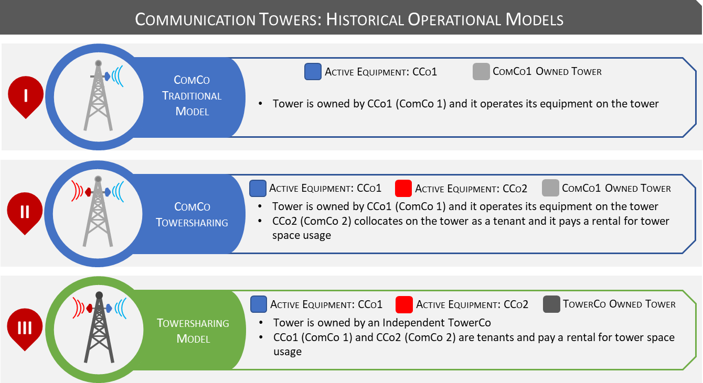

Introduction to Tower Sharing 📡
Disclaimer:
This article is for educational purposes only. Information presented has been compiled from multiple pieces of literature including Towerxchange.com and involves some data crunching conducted by the author. Since most TowerCos are under private ownership globally, data is available to the extent it is provided by Governments and/or TowerCos. Certain approximations have been made.
Please also review the General Disclaimer covering all content in and/or directed from Quantificate.ca.
What Is Towersharing? 🏗️
Tower Sharing (or "Towersharing") is a concept that breathed into existence in the not so distant past. The concept, although as simple as it may seem, was marked as a revolutionary step in the telecommunications and media backhaul industry during its conception. The idea behind said initiative was based on the decomposition of the chain of operational models that govern provision of telecommunications/media and radio services to the end customer (be it individual consumers, businesses, governmental agencies etc).
Whereas it may (or may not) seem obvious at first, the communication facilities (cellphone, radio, television) that are deeply embedded in our daily lives and ones that are difficult to function without in the twenty first century are the product of a series of interconnected dots that constitute the entire value chain of communications. Just as the internet (perceived as a virtual space for the sharing and communication of data) is actually made up of thousands (if not millions) of miles of underground/deep sea fiber cables connecting continents at end1, wireless communications are a product of thousands of strategically placed tower assets (broadcast or otherwise) that enable to and from communication across geographies forming an interconnected web of data transfer hotspots.
💡 In Simple Terms: Towersharing is the breaking down of the chain of operational models, highlighting a key component of wireless communication (i.e. the tower assets) and converting it into a viable business model that entails long and sustainable growth and value for a multitude of stakeholders (be it communication based corporations, society, environment etc.).
The Key Players: TowerCos, ComCos and MNOs 🤝
Tower Companies (or "TowerCos") aim to partner with the Communication Companies/Corporations (or "ComCos") by purchasing existing tower assets (i.e. Tower Portfolios) and/or build new tower assets (i.e. Build-to-Suit or "BTS") on designated areas for coverage and/or capacity concerns. These TowerCos then lease (or in simple terms, rent) space on the towers to the ComCos to install and/or operate (if already installed) their active communications equipment (i.e. radio, microwave and other transmission equipment known as "Active Equipment") on the towers. The timeframe of said contracts generally are mid to long term agreements (spanning 7+ years)2.
📋 How It Works
Step 1: A TowerCo purchases existing tower assets from a ComCo (or builds new ones).
Step 2: The ComCo leases space on those towers to install and operate its Active Equipment (radios, microwave transmitters etc.).
Step 3: Additional ComCos can also lease space on the same tower — this is called collocation, and it's the engine of the TowerCo business model.
TowerCos initially established their operations to supplement the Cellular Network Operators (or Mobile Network Operators i.e. "MNOs"). Since MNOs constituted the major customer base for the TowerCos globally, it was naturally implied that the first target base for TowerCos to market their services to would be MNOs. MNOs to this day constitute a major chunk of the TowerCo customer base and TowerCos primarily tailor their services for the MNOs. However, in recent history, Broadcast Companies have been witnessed to jump on the bandwagon as well.
Active vs. Passive Equipment ⚡
Bear in mind, TowerCos, in the traditional sense, are the owners of only the Tower Assets (i.e. the steel structure, sheds to house Active Equipment, wiring on the towers, cabling etc. known as "Passive Equipment") and have no ownership interest in the Active Equipment. However, in the years following the inception of TowerCos, several Value-Added and Hybrid models have sprung up across the globe to cater to the growing needs of ComCos.
🔧 Passive Equipment = The tower structure, sheds, wiring, cabling — owned by the TowerCo.
📶 Active Equipment = Radios, microwave transmitters, antennas — owned and operated by the ComCo.
The following illustration will (in a crude yet simplistic manner) shed light on the traditional modus operandi of ComCos and how the introduction of TowerCos have evolved the said structure.

The illustration above highlights three stages in the evolution of tower operations:
- Stage I — ComCo Traditional Model: The tower is owned by a single ComCo (ComCo 1) which operates its own equipment on the tower. No sharing takes place.
- Stage II — ComCo Towersharing: The tower is still owned by ComCo 1, but a second operator (ComCo 2) collocates on the tower as a tenant and pays a rental for tower space usage.
- Stage III — Towersharing Model: The tower is owned by an independent TowerCo. Both ComCo 1 and ComCo 2 are tenants, each paying a rental for tower space usage. The TowerCo focuses exclusively on managing the tower infrastructure.
What's Next? 🚀
The TowerCo Business Model will be further discussed in the remainder of this series. In the next section, we will delve into why Towersharing became such a sought after proposition by ComCos — tracing the journey of MNOs from the 1980s through to the era of declining ARPUs and aggressive price competition that ultimately led to the creation of TowerCos.
We will also explore how TowerCos expanded from their origins in the United States to become a global phenomenon spanning Latin America, Africa, India, Southeast Asia, Europe and beyond. 🌍
Continue the Series 📚
This is Part 1 of the Towersharing Deep Dive series. Stay tuned for the upcoming sections covering the history of TowerCos, operational models, and the mechanics of the TowerCo business plan.
Explore More Articles